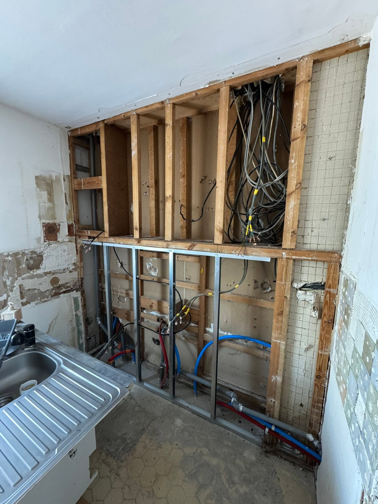

CHANTIER 01 · INTÉRIEURUne nouvelle vie
Une nouvelle vie
pour la salle de bains.
De la baignoire à la douche, une transformation visible à chaque étape : dépose, préparation et nouvel aménagement.
INTÉRIEUR & EXTÉRIEUR · COURSAN
Un nouvel espace. Une nouvelle façon d’être chez vous. Brice Galiana vous accompagne dans vos projets de rénovation, de transformation et d’aménagement.
À Coursan et dans les départements de
l’Aude, l’Hérault et les Pyrénées-Orientales.
UN PROJET SIGNÉ GALIANA BRICE01 — LES PRESTATIONS
Une pièce à repenser, un intérieur à rénover ou un extérieur à aménager : donnons forme à votre projet.
Redonner vie à votre intérieur, de la salle de bains à la cuisine.
02Repenser vos espaces pour les adapter à votre quotidien.
03Faire évoluer vos espaces, à l’intérieur comme à l’extérieur.
04Les travaux de finition et d’entretien qui font la différence.
Un besoin particulier ? Présentez-nous votre projet
02 — LES RÉALISATIONS
Deux chantiers, du premier coup d’outil aux dernières finitions. Découvrez les transformations en images.
De la baignoire à la douche, une transformation visible à chaque étape : dépose, préparation et nouvel aménagement.


De l’espace en travaux à la cuisine aménagée. Découvrez la progression du chantier et le résultat final.

DU PREMIER GESTE AUX FINITIONS.03 — À PROPOS
Installé à Coursan, Brice Galiana réalise des travaux de rénovation, de transformation et d’aménagement pour les particuliers.
Une salle de bains à moderniser, une cuisine à repenser ou des travaux à prévoir dans votre maison ? Tout commence par votre besoin et l’espace que vous imaginez.
Échangeons sur votre projet04 — CONTACT
Décrivez votre projet en quelques mots.
La demande de devis est gratuite.
Entreprise située à Coursan (11110)